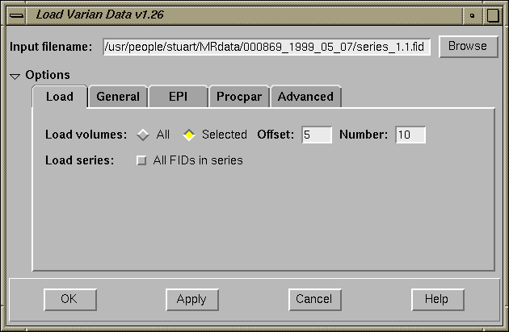
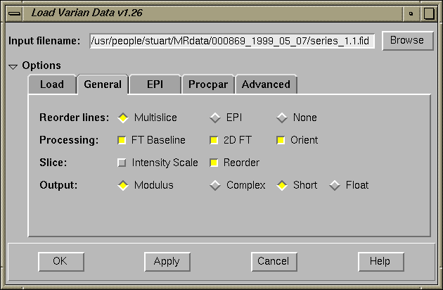
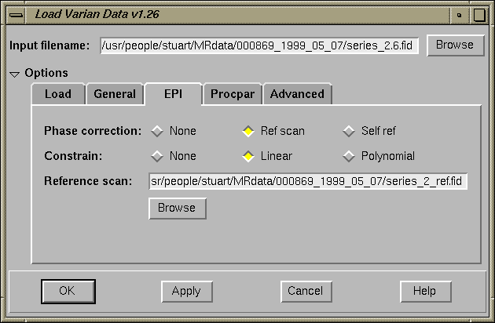
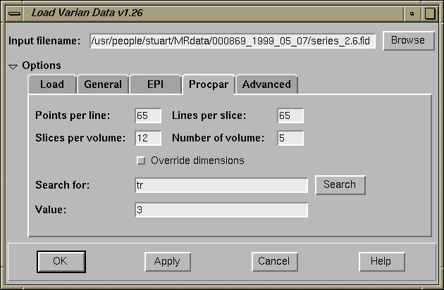
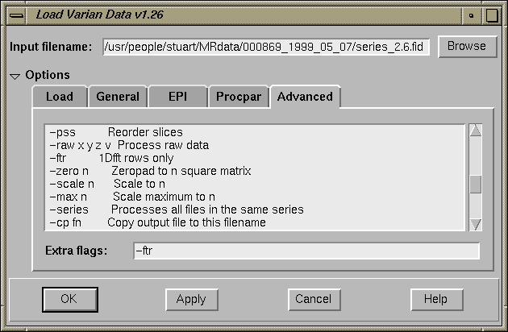

-cp filenamewhere filename is the name and path of the file you want to save the data in. N.B. You do not need to append the filename with .hdr since this will be added automatically
Two functions are available for loading Varian data as part of a tcl script. The first is easier to call, but makes certain assumptions about the data, and what processing is needed. It is the equivelent of just entering the filename in the Load Varian dialog box and pressing OK. If your data does not process properly in this way then you need to use the second function described below.
if { [ info exists env(FSLDIR) ] } {
set FSLDIR $env(FSLDIR)
} else {
set FSLDIR $PXHOME/fsl
}
set BINPATH ${FSLDIR}/bin
source $FSLDIR/tcl/load_varian_proc.tcl
before you use the LoadVarian Command.
LoadVarian "filename"
/usr/freeware/medx/fmrib/src/load_varian/example_script.tcl
Usage: |
load_varian_proc $filename $process $phasecor $refname $constrain \
$baseline $2dft $orient $resl $rot $scsl $pss $fmt $bits \
$load $from $to
| |
Parameters: |
$filename - Full filename to process (without .fid) $process - "ms" (multislice) or "epi" $phasecor - "" (none), "ref" (ref scan), "buo" (self ref) $refname - Filename of reference scan or "" $constrain - "" (none), "lin" (linear), "poly" (polynomial) $baseline - 1 or 0 $2dft - 1 or 0 $orient - 1 or 0 $resl - 1 or 0 $rot - 1 or 0 $scsl - 1 or 0 $pss - 1 or 0 $fmt - "mod" (modulus) or "cplx" (complex) $bits - "short" or "float" $load - "all" or "part" $from - n $to - n | |
Returns: |
0 if successful 1 otherwise | |
Summary: |
Processes Varian data (multislice or epi) using the supplied parameters. |